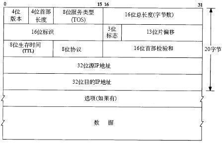

IP协议是TCP/IP协议簇中的核心协议，也是TCP/IP的载体。所有的TCP，UDP，ICMP及IGMP数据都以IP数据报格式传输。
IP提供不可靠的，无连接的数据传送服务。
不可靠指它不能保证IP数据报能成功到达目的地。IP仅提供最好的传输服务。当发生某种错误时，如某个路由器暂时用完了缓冲区，IP有一个简单的错误处理算法：丢弃该数据报，然后发送ICMP消息给信源。任何要求的可靠性必须由上层来提供。
IP提供不可靠的，无连接的数据传送服务。
不可靠指它不能保证IP数据报能成功到达目的地。IP仅提供最好的传输服务。当发生某种错误时，如某个路由器暂时用完了缓冲区，IP有一个简单的错误处理算法：丢弃该数据报，然后发送ICMP消息给信源。任何要求的可靠性必须由上层来提供。
无连接指IP并不维护任何关于后续数据报的状态信息。每个数据报的处理是相互独立的。IP数据报可以不按发送顺序接收。如果一信源向相同的信宿发送两个连续的数据报（先是A，然后是B）每个数据报都是独立的进行路由选择，可能选择不同的路线，因此B可能在A到达之前先到达。
IP包头

版本号：4个bit，用来标识IP版本号。这个4位字段的值设置为二进制的0100表示IPv4，设置为0110表示IPv6。目前使用的IP协议版本号是4。
首部长度：4个bit。标识包括选项在内的IP头部字段的长度。
服务类型：8个bit。服务类型字段被划分成两个子字段：3bit的优先级字段和4bit TOS字段，最后一位置为0。4bit的TOS分别代表：最小时延，最大吞吐量，最高可靠性和最小花费。4bit中只能将其中一个bit位置1。如果4个bit均为0，则代表一般服务。


现在大多数的TCP/IP实现都不支持TOS特性，但自4.3BSD Reno以后的新版系统都对它进行了设置。另外，OSPF和IS-IS都可以根据这些字段的值进行路由策略。而类似SLIP这样的协议虽然提供基于服务类型的排队方法，允许对交互型数据优先进行处理，但它的这种排队机制由SLIP自身来判断和处理。驱动程序会先查看协议字段（确定是否是TCP段），然后检查TCP信源和信宿的端口号来判断是否是一个交互服务。
最近，TOS字段已经作为区分服务（Diffserv）架构的一部分被重新定义了。Diffserv比TOS定义所允许的处理更加灵活。在Diffserv下，能够在一台路由器上定义服务分类（COS），将数据包归类到这些分类中去。路由器可以根据它们的分类使用不同的优先级对数据包进行转发。每一个排序和转发处理称为一个PHB。这个架构也被简称为COS。

利用开始的6个位构成DSCP位，可以使用任意数值或根据区分服务体系结构中预先定义的服务类别，最多可以定义64个不同的服务类别并整理到PHB中。ECN为显式拥塞通知位。当路由器支持该特性时，这些位可以用于拥塞信号（ECN=11）。
总长度字段：16个bit。接收者用IP数据报总长度减去IP报头长度就可以确定数据包数据有效负荷的大小。IP数据报最长可达65535字节。
标识字段：16个bit。唯一的标识主机发送的每一份数据报。接收方根据分片中的标识字段是否相同来判断这些分片是否是同一个数据报的分片，从而进行分片的重组。通常每发送一份报文它的值就会加1。
标志字段：3个bit。用于标识数据报是否分片。第1位没有使用，第2位是不分段（DF）位。当DF位被设置为1时，表示路由器不能对数据包进行分段处理。如果数据包由于不能分段而未能被转发，那么路由器将丢弃该数据包并向源发送ICMP不可达。第3位是分段（MF）位。当路由器对数据包进行分段时，除了最后一个分段的MF位被设置为0外，其他的分段的MF位均设置为1，以便接收者直到收到MF位为0的分片为止。
位偏移：13个bit。在接收方进行数据报重组时用来标识分片的顺序。用于指明分段起始点相对于报头起始点的偏移量。由于分段到达时可能错序，所以位偏移字段可以使接收者按照正确的顺序重组数据包。
当数据包的长度超过它所要去的那个数据链路的MTU时，路由器要将它分片。数据包中的数据将被分成小片，每一片被封装在独立的数据包中。接收端使用标识符，分段偏移以及标记域的MF位来进行重组。
生存时间：8个bit。TTL域防止丢失的数据包在无休止的传播。该域包含一个8位整数，此数由产生数据包的主机设定。TTL值设置了数据报可以经过的最多的路由器数。TTL的初始值由源主机设置（通常为32或64），每经过一个处理它的路由器，TTL值减1。如果一台路由器将TTL减至0，它将丢弃该数据包并发送一个ICMP超时消息给数据包的源地址。注意：TTL值经过PIX时不减1。
协议字段：8个bit。用来标识是哪个协议向IP传送数据。ICMP为1，IGMP为2，TCP为6，UDP为17，GRE为47，ESP为50。
首部校验和：根据IP首部计算的校验和码。
Option选项：是数据报中的一个可变长的可选信息。

选项字段以32bit为界，不足时插入值为0的填充字节。保证IP首部始终是32bit的整数倍。
IP路由选择
如果目的主机与源主机直接相连（点对点）或都在一个共享网络上（以太网），那么IP数据报就直接送达到目的主机上。否则，主机把数据报发到网关（路由器），由路由器来转发该数据报。
IP可以从TCP，UDP，ICMP，IGMP接收数据报并进行发送，或者从一个接口接收数据报并进行发送。IP层在内存中有一个路由表，当收到一份数据报并进行发送时，都要对该表进行搜索。当数据报来自某个接口时，IP首先检查目的IP地址是否为本机的IP地址或广播地址。如果是，数据报就被送到由IP首部协议字段所指定的协议模块进行处理。如果数据报的目的不是这些地址，那么：⑴如果IP层被设置成路由器的功能，那么就对数据报进行转发。⑵数据报被丢弃。
路由表：
目的IP地址：可以是一个完整的主机地址，也可以是一个网络地址。
下一跳地址：一个直接相连网络上的路由器。下一跳路由器不一定是最终目的地，但它可以把传送给它的数据报转发到目的。
标志：其中一个标志指明目的IP地址是网络地址还是主机地址，另一个标志指明下一站路由器是否为真正的下一跳路由器还是一个直连接口。
IP路由选择是逐跳的进行的。IP并不知道到达任何目的的完整路径。所有的IP路由选择只为数据报传送提供下一站路由器的IP地址。它假定下一站路由器比发送数据报的主机更接近目的，并且下一站路由器与该主机是直接相连的。
IP路由选择主要完成以下功能：
⑴搜索路由表，寻找与目的IP地址完全匹配的条目。
⑵如果⑴失败，则寻找与目的网络号匹配的条目。
⑶如果⑴和⑵都失败，则寻找默认路路由。如果找到，则把报文发送给该条目指定的下一站路由器。如果未找到，则丢弃数据报并向源发送ICMP不可达。
子网寻址与子网掩码
IP地址的分类如下：

IP地址掩码标识了IP地址的网络部分。32位掩码中的1标识了IP地址中相应的网络位，0标识了主机位。将IP地址和掩码进行与运算，结果是IP地址中对应于掩码网络部分的那一段不变，而对应于主机部分的全变成0。
子网化是对A，B，C类地址进行子分组。如果没有子网化，A，B，C类的主IP地址的网络部分将只能标识一个数据链路。子网化使用主IP地址中的一些主机位作为网络位，允许一个单独的主地址被划分为多个网络地址。
有类的路由协议不能区分全0和主IP地址，也不能区分全1子网和主IP地址的全主机，全子网广播地址
此部分为最基础知识，不再赘述。
特殊的IP地址

Ifconfig & Netstat 命令
Ifconfig命令一般在引导时运行，以配置主机上的每个接口。
netstat命令也提供系统上的接口信息。-i参数将打印出接口信息，-n参数则打印出IP地址，而不是主机名字。
NETSTAT [-a] [-b] [-e] [-n] [-o] [-p proto] [-r] [-s] [-v] [interval]